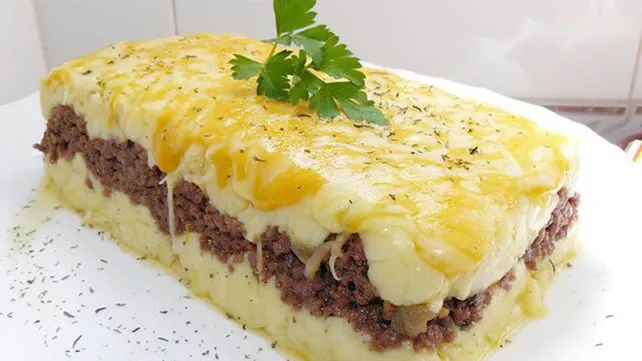

Receta pastel de papa

Ingredientes
- 1kg de papas
- 1/2 kg de carne picada de ternera
- 1 cebolla
- 1/2 morron
- 2 dientes de ajo
- 1 caldito
- ajo en polvo
- pimenton
- 25g de manteca
- 1 chorrito de leche
- nuez moscada
- aceite
- sal
- pimienta
Modo de preparacion
- Cortar las papas en cubos y ponerlas a hervir con sal
- picar la cebolla , el ajo y el morron
- Calentar el aceite en una sarten y sofreir la cebolla , los aojos y el morron
- Cuando la cebolla este transparente agregar la carne picada y sofreir todo
- Salpimentar y agregar la pastilla de caldo el ajo en polvo y cocinar la carne 15 min
- Una vez que las papas esten hervidas hacer el pure , agregarle la manteca , leche , sal y pimienta
- Poner en una fuente para horno ua base de pure y agregar por encima la carne y colocar otra capa de pure.
- llevar al horno 20 minutos o hasta que la parte de arriba este crocante